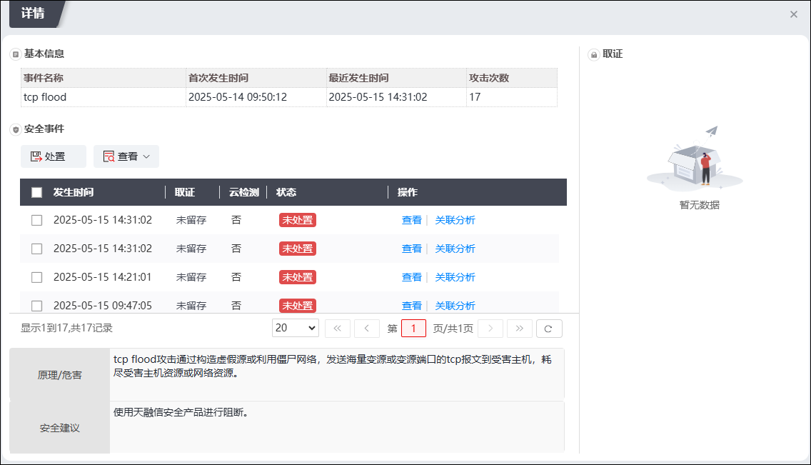

NGFW内置了僵木蠕检测模块，能够实时监控网络攻击，并根据配置策略对网络攻击进行告警、拦截等操作。当检测到攻击企图时，NGFW会自动将攻击包丢掉或将攻击源阻断，有效地实现了主动防御功能可以检测和抵御多种攻击和扫描行为。NGFW的僵木蠕模块基于模式匹配和异常检测技术对网络数据进行在线数据解析和攻击检测的网络安全解决方案。它通过对数据包进行规则匹配，对异常的数据包进行主动防御，从而保护网络的安全。
配置僵木蠕防护功能的操作方式与入侵防御类似，此处不再详述，有关入侵防御功能的配置详见 入侵防御。
僵木蠕防御规则和入侵防御规则比较，差异是：1）配置规则集时，僵木蠕防御规则比入侵防御规则多了3个参数配置（信息检查、访问跟踪、恶意IP检测）；2）配置白名单时，僵木蠕防御规则比入侵防御规则多支持了域名白名单。
Ø信息检查：开启信息检查时，依赖动态僵尸网络信息库，检测DNS请求中的恶意域名。只有信息检查配置告警动作时，才可以对后续的流量进行跟踪访问。对恶意域名的流量跟踪，结果会在防火墙检测到的安全事件详情中显示，分为三种：1、当Dns应答包解析成功，获取到域名对应ip，而且有后续流量，但后续上行流量不超过10MB时，结果显示为“成功”2、当Dns应答包解析成功，获取到域名对应ip，但无后续流量时，结果显示为“域名解析成功，但无后续连接”；3、当Dns应答包解析成功，获取到域名对应ip，而且有后续流量，后续上行流量超过10MB时，结果显示为“上行流量较大（>10MB），可疑数据泄露”。
Ø访问跟踪：开启访问追踪前必须先开启“信息检查”功能。
开启信息检查和访问跟踪后，记录的访问恶意域名记录如下图所示（“安全中心-威胁详情-安全事件-详情”展示页）。

Ø恶意IP检测：检测恶意IP地址。
|
²当域名/IP检测没有命中防火墙本地相关安全策略时，会进入云检测模块进行云检测，云检测的描述详见 云安全中心。 |

Ø域名白名单：如果请求报文的域名命中白名单，僵木蠕模块直接放行报文，不对该报文进行深度检测。